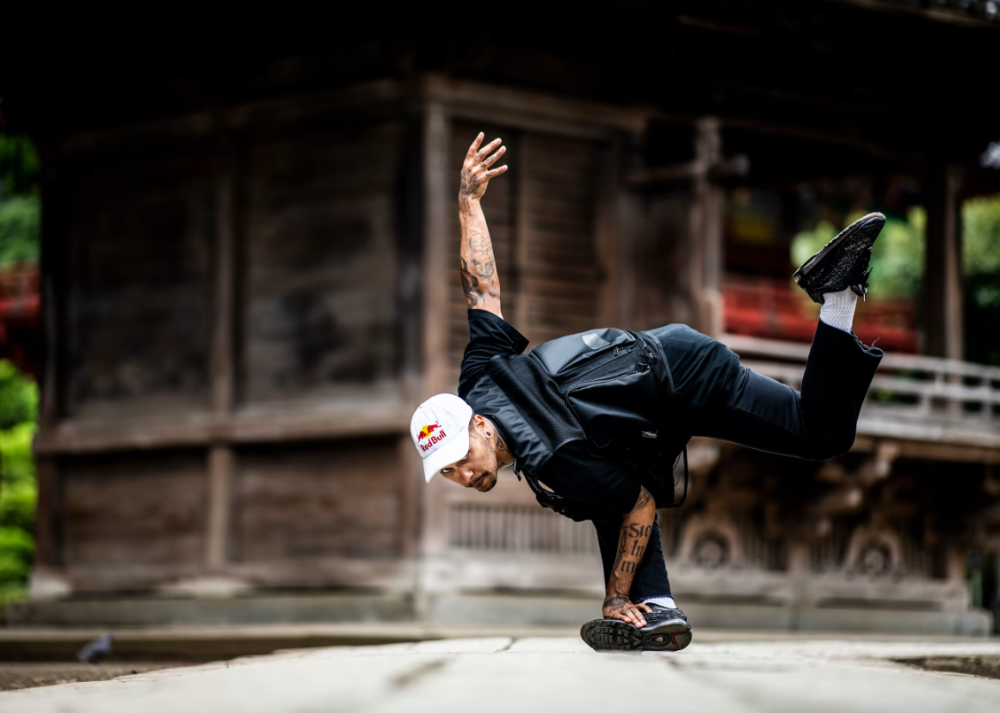
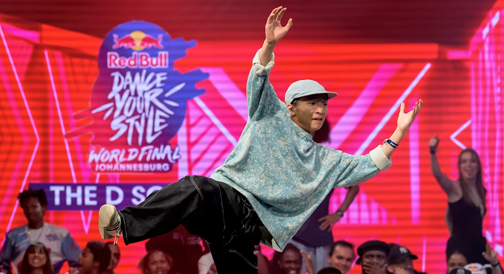
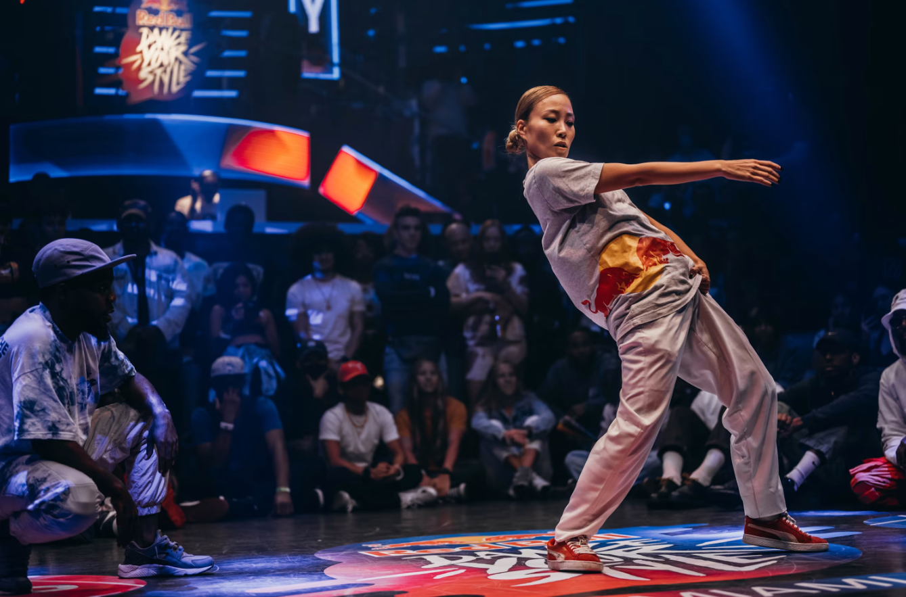
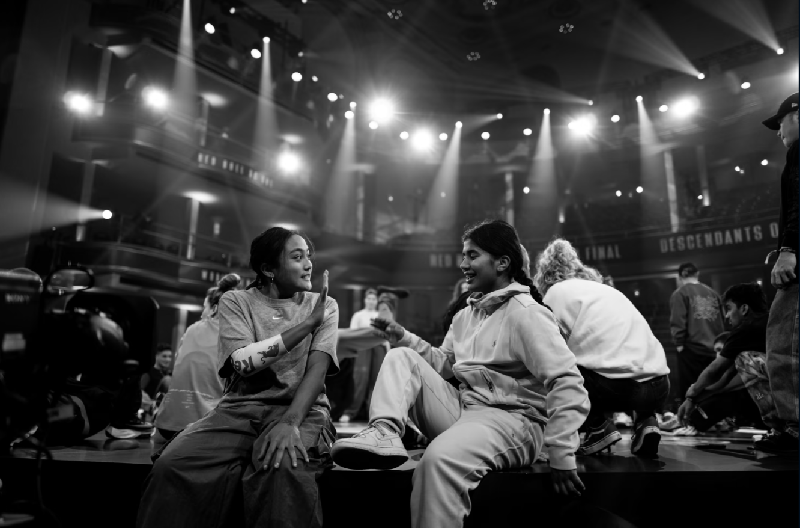

Origen |
|
|---|---|
| Las batallas de baile moderno se originaron en la década de 1970 en Nueva York, durante el surgimiento del hip hop y el breakdance en las calles de la ciudad. Los jóvenes afroamericanos y latinos comenzaron a competir en bailes improvisados en lugares públicos, como parques y estaciones de metro. Estos bailes se caracterizaban por su estilo acrobático y atlético, con movimientos rápidos y fluidos. Con el tiempo, estas competencias evolucionaron y se volvieron más organizadas, dando lugar a las primeras competencias de baile moderno en clubes y eventos culturales. Las batallas de baile moderno se convirtieron en un fenómeno global en la década de 1990, gracias a la popularidad del hip hop y el breakdance en todo el mundo. |
 "bailarin en redbull" |
Antecedentes |
|
| Las batallas de baile moderno tienen sus raíces en la cultura afroamericana y latina de los barrios de Nueva York. La música y el baile siempre han sido una forma de expresión en estas comunidades, y la competencia ha sido una parte integral de la cultura hip hop desde sus inicios.
Los bailarines de hip hop y breakdance a menudo se inspiraban en las artes marciales, creando movimientos fluidos y acrobáticos que desafiaban la gravedad y la física. |
 "Craig Kolesky/Red Bull Content Poo" |
Historia |
|
|  "Dassy en el Red Bull Dance Your Style 2021 en Miami" < |
En las décadas de 1980 y 1990, las batallas de baile moderno se popularizaron en todo el mundo gracias a películas como "Flashdance", "Breakin'" y "Beat Street". Estas películas presentaban a jóvenes bailarines que competían en las calles de Nueva York, inspirando a una generación de bailarines y ayudando a difundir la cultura hip hop y el breakdance en todo el mundo.
En la actualidad, las batallas de baile moderno son un fenómeno global, con competencias que se celebran en todo el mundo. Las competencias a menudo tienen diferentes categorías, como breakdance, popping, locking y krumping, entre otros estilos. Los bailarines compiten en parejas o en grupos, y se enfrentan en rondas eliminatorias hasta que un ganador es declarado. |
Objetivo |
|
|  "B-girl Logistx y B-girl India en la Final Mundial del Red Bull BC One 2022" |
El objetivo de las batallas de baile moderno es mostrar las habilidades de los bailarines en diferentes estilos de baile moderno. Los bailarines compiten para demostrar su habilidad técnica, creatividad y estilo personal. Los jueces evalúan a los bailarines en función de la técnica, la sincronización, la creatividad y la originalidad.
Además, las batallas de baile moderno también son una forma de promover la cultura hip hop y el breakdance, y de proporcionar una plataforma para que los bailarines muestren su arte y habilidades al mundo. A través de estas competiciones, los bailarines pueden inspirar e influir en otros bailarines, y ayudar a difundir la cultura hip |